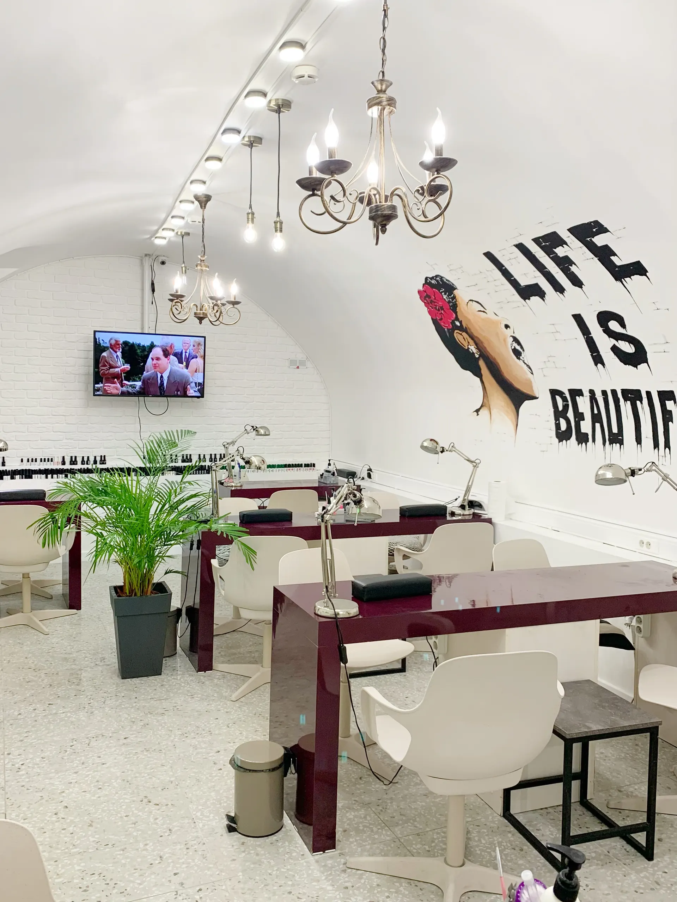
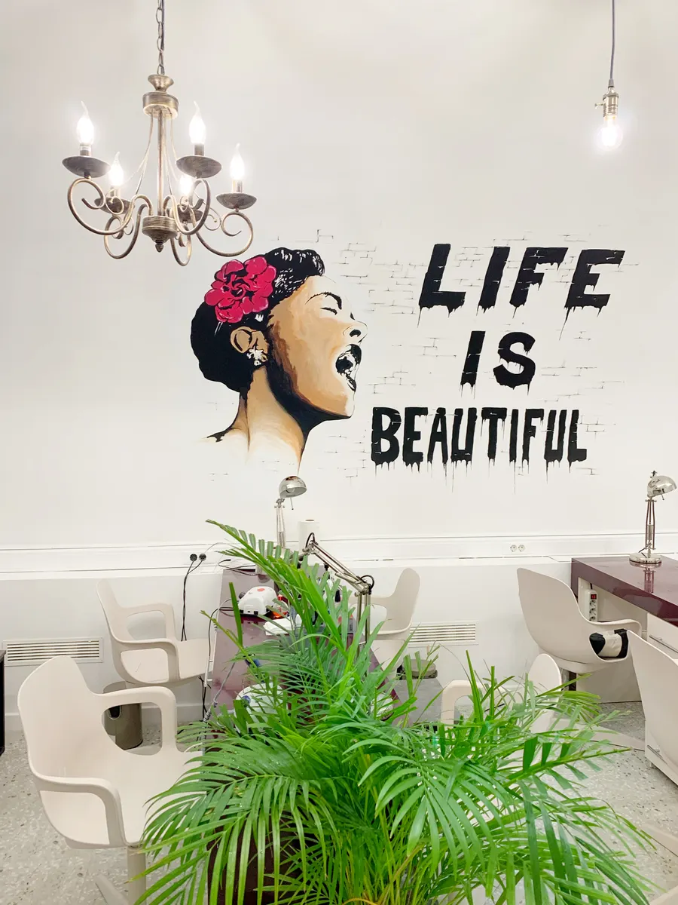
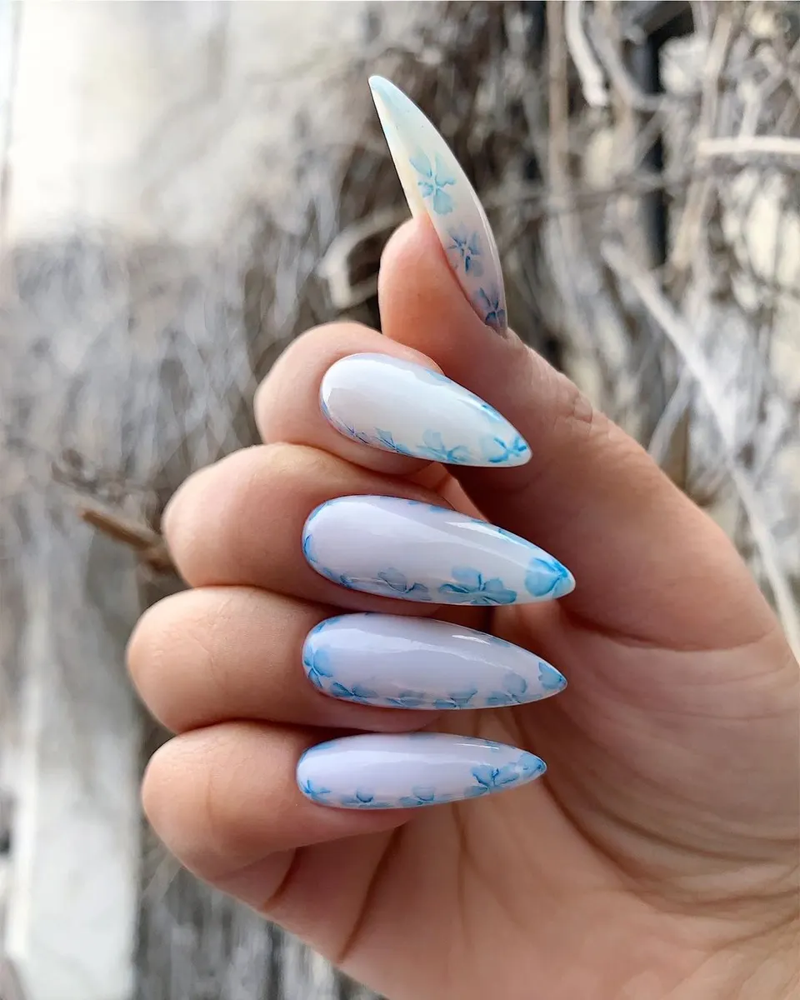
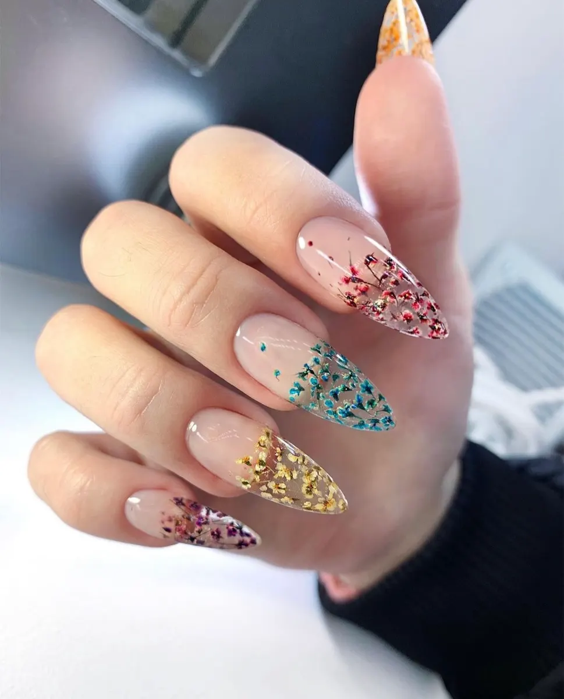

Маникюр · педикюр · наращивание · Москва
Маникюрная студия у метро Китай-город
Маникюр, педикюр и наращивание в центре Москвы. Выберите услугу, день и время, остальное уточним в сообщении.
- Акция «Всё включено»: маникюр с покрытием от 1 690 ₽ по карточке
- Метро Китай-город в 127 метрах
- Открыто каждый день с 10:00 до 22:00

Цены до записи
Прайс с карточки на Яндекс.Картах. Карточка давно не обновлялась, поэтому точную сумму называют при записи. В акциях «Всё включено» расписан состав.
Акции «Всё включено»
- Маникюр с покрытием Kalipsoснятие, маникюр, выравнивание и покрытие1 690 ₽
- Педикюр с покрытием Kalipsoснятие, педикюр и покрытие1 990 ₽
- Комплекс: маникюр и педикюр3 490 ₽
Наращивание
- Маникюр с наращиванием и покрытием Kalipso2 950 ₽
- Маникюр с коррекцией наращенных и покрытием Kalipso3 150 ₽
Цены взяты с карточки на Яндекс.Картах, она давно не обновлялась. Дизайн и длина ногтей влияют на итог, его называют при записи.
Как проходит запись
- 01
Выбираете услугу, день и время
Сообщение с заявкой откроется в WhatsApp, останется нажать «отправить».
- 02
Пишете пожелания
Покрытие, форма, дизайн: администратор подскажет, как лучше.
- 03
Администратор подтверждает запись
Время и детали уточняют в переписке.
- 04
Приходите на Лубянский проезд, 15, стр. 4
Вход со двора, у двери табличка «T&G Nails», рядом метро Китай-город.



Что вас ждёт
Цены с карточки на Яндекс.Картах
В прайсе стоят цены с карточки студии. Она давно не обновлялась, поэтому точную сумму называют при записи.
Состав в цене «Всё включено»
У акционных маникюра и педикюра расписано, что входит: снятие, сама процедура и покрытие Kalipso.
Любой мастер студии
Клиентка пишет: «записываюсь к свободному мастеру, потому что знаю, что всегда получится хорошо».
Чай и кофе на стойке
Клиентка пишет в отзыве: «на стойке предложили чай/кофе».
Отзывы с Яндекс.Карт
«Пришла в салон по рекомендации подруги и ни капельки не пожалела! Удобный сайт для записи, салон в удобном расположении и прекрасный персонал! Маникюр сделали очень быстро и аккуратно. Обязательно посоветую подружкам и сама приду еще)»
Инна Быстрова · 4 июня
«Была в салоне в первый раз по рекомендации знакомых. Мастер быстро все сделала, даже быстрее, чем ожидалось. Цены очень приятные, на стойке предложили чай/кофе! Всем рекомендую для посещения, тем более расположение в минуте от метро в самом центре!»
Дарья К. · 30 июня
«Хорошее обслуживание, адекватные цены, мастера работают довольно быстро и аккуратно. Хожу в этот салон часто, удобно, что находится рядом с метро, рекомендую)»
Мария Ф. · 2 мая
Отзывы с карточки на Яндекс.Картах, без правок.
Частые вопросы
До скольки можно записаться?
Студия работает каждый день с 10:00 до 22:00.
Как найти студию?
Лубянский проезд, 15, стр. 4, этаж 1. Вход со двора, у двери табличка «T&G Nails», метро Китай-город в 127 метрах.
Что входит в акцию «Всё включено»?
По карточке: для маникюра снятие, маникюр, выравнивание и покрытие Kalipso (1 690 ₽), для педикюра снятие, педикюр и покрытие Kalipso (1 990 ₽).
Можно ли записаться к любому мастеру?
Клиентки пишут, что записываются к свободному мастеру и результат всегда хороший. Если нужен конкретный мастер, напишите об этом при записи.
Цена в прайсе точная?
Это цены с карточки на Яндекс.Картах, она давно не обновлялась. Дизайн и длина ногтей влияют на итог, его называют при записи.
Напишите, когда вам удобно
- Адрес
- Лубянский проезд, 15, стр. 4, этаж 1, Москва
- Часы
- Ежедневно 10:00-22:00
- Телефон
- +7 (909) 680-18-54